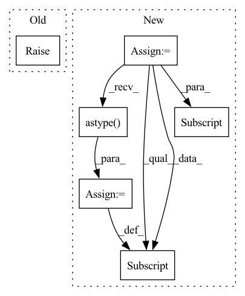

Pattern ID :3760
Before Change
)
if np.any(np.isnan(internal_features)):
raise ValueError(f"NaN found in internal features. {NAN_ERROR_MESSAGE}")
internal_attributes = transform(
attributes,After Change
if "ContinuousOutput" in str(val.__class__)
]
valid_examples = validation_check(
features[:, :, continuous_features_ind].astype("float")
)
// Only using valid examples for the entire dataset.
features = features[valid_examples]
// Apply linear interpolations for continuous features:
features[:, :, continuous_features_ind] = nan_linear_interpolation(
features[:, :, continuous_features_ind].astype( "float")
)
if attributes is not None:
attributes = attributes[valid_examples]In pattern: SUPERPATTERN
Frequency: 3
Non-data size: 6
Instances Fragment ID: 14127333
Project Name: gretelai/gretel-synthetics
Commit Name: a1acefc589df62b93afc0051d53d755b6a0a3997
Time: 2022-12-02
Author: 100327880+Marjan-emd@users.noreply.github.com
File Name: src/gretel_synthetics/timeseries_dgan/dgan.py
M Class Name: DGAN
N Class Name: DGAN
M Method Name: train_numpy(5)
N Method Name: train_numpy(5)
M Parent Class:
N Parent Class:
M File Name: src/gretel_synthetics/timeseries_dgan/dgan.py
N File Name: src/gretel_synthetics/timeseries_dgan/dgan.py
M Start Line: 249
M End Line: 268
N Start Line: 243
N End Line: 262
Before Change
)
def prune(self, percentile):
raise NotImplementedError
w_copy = np.abs(self.w.detach().numpy())
b_copy = np.abs(self.b.detach().numpy())
w_percentile = np.percentile(w_copy, percentile)After Change
w_copy = np.abs(self.w.detach().numpy())
b_copy = np.abs(self.b.detach().numpy())
new_w_mask = np.zeros_like(w_copy)
new_b_mask = np.zeros_like(b_copy)
for task_num in range(self.num_tasks):
if task_num != 0:
for prev_idx in range(task_num - 1):
w_copy[task_num][new_w_mask[prev_idx] == 1] = 0
b_copy[task_num][new_b_mask[prev_idx] == 1] = 0
w_percentile = np.percentile(w_copy[task_num], percentile)
b_percentile = np.percentile(b_copy[task_num], percentile)
new_w_mask[task_num] = (w_copy[task_num] >= w_percentile).astype(int)
new_b_mask[task_num] = (b_copy[task_num] >= b_percentile).astype( int)
self.w_mask = torch.Tensor(new_w_mask)
self.b_mask = torch.Tensor(new_b_mask)
Fragment ID: 14127330
Project Name: beyond-ml-labs/beyondml
Commit Name: 03dd7b87e47d75ba5a7317f31e1ff50b340898a7
Time: 2022-06-02
Author: 77127228+jacobrenn@users.noreply.github.com
File Name: mann/burning/layers/MultiMaskedConv2D.py
M Class Name: MultiMaskedConv2D
N Class Name: MultiMaskedConv2D
M Method Name: prune(2)
N Method Name: prune(2)
M Parent Class: torch.nn.Module
N Parent Class: torch.nn.Module
M File Name: mann/burning/layers/MultiMaskedConv2D.py
N File Name: mann/burning/layers/MultiMaskedConv2D.py
M Start Line: 98
M End Line: 107
N Start Line: 85
N End Line: 103
Before Change
return outputs
def prune(self, percentile):
raise NotImplementedError
w_copy = np.abs(self.w.detach().numpy())
b_copy = np.abs(self.b.detach().numpy())
w_percentile = np.percentile(w_copy, percentile)After Change
w_copy = np.abs(self.w.detach().numpy())
b_copy = np.abs(self.b.detach().numpy())
new_w_mask = np.zeros_like(w_copy)
new_b_mask = np.zeros_like(b_copy)
for task_num in range(self.num_tasks):
if task_num != 0:
for prev_idx in range(task_num - 1):
w_copy[task_num][new_w_mask[prev_idx] == 1] = 0
b_copy[task_num][new_b_mask[prev_idx] == 1] = 0
w_percentile = np.percentile(w_copy[task_num], percentile)
b_percentile = np.percentile(b_copy[task_num], percentile)
new_w_mask[task_num] = (w_copy[task_num] >= w_percentile).astype( int)
new_b_mask[task_num] = (b_copy[task_num] >= b_percentile).astype(int)
self.w_mask = torch.Tensor(new_w_mask)
self.b_mask = torch.Tensor(new_b_mask) Fragment ID: 14127328
Project Name: beyond-ml-labs/beyondml
Commit Name: 03dd7b87e47d75ba5a7317f31e1ff50b340898a7
Time: 2022-06-02
Author: 77127228+jacobrenn@users.noreply.github.com
File Name: mann/burning/layers/MultiMaskedDense.py
M Class Name: MultiMaskedDense
N Class Name: MultiMaskedDense
M Method Name: prune(2)
N Method Name: prune(2)
M Parent Class: torch.nn.Module
N Parent Class: torch.nn.Module
M File Name: mann/burning/layers/MultiMaskedDense.py
N File Name: mann/burning/layers/MultiMaskedDense.py
M Start Line: 43
M End Line: 52
N Start Line: 40
N End Line: 58